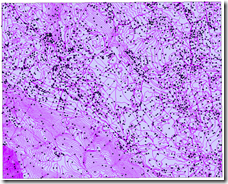

La Regione Puglia, con le iniziative messe in atto dall’Assessorato Regionale all’Assetto del Territorio in questi ultimi tempi sta compiendo importanti passi avanti nel settore dell’acquisizione di dati spaziali digitali e nell’offerta di servizi al territorio.
Già dal 2007 è infatti operativa la Rete GNSS regionale – 12 stazioni permanenti – con la quale è possibile effettuare rilevamenti GPS di dettaglio con una precisione centimetrica, sia in post-processing mediante uso di dati RINEX, che in correzione differenziale con l’impiego di rover GPS, ricevitori in grado di correggere gli errori in real-time connettendosi mediante GSM/GPRS alla rete GNSS stessa.
Altra iniziativa di rilievo messa in atto è quella di consentire ai cittadini di poter contribuire attivamente alla realizzazione del nuovo Piano Paesaggistico Territoriale Regionale (PPTR), con l’istituzione dell’Osservatorio del Piano. L’Atlante delle Segnalazioni è un mashup di Google Maps con il quale chiunque può – secondo il principio del più autentico crowdsourcing – dire la propria, segnalando direttamente su una mappa quattro tipi di entità:
| Bene del paesaggio: è un luogo o un oggetto o un insieme di oggetti che si giudica prezioso per la qualità del paesaggio, e per il quale si ritiene necessaria una azione di tutela e valorizzazione. | |
| Offesa al paesaggio: è un luogo o un oggetto o un insieme di oggetti che si ritiene responsabile di un degrado della qualità del paesaggio e per il quale si ritiene necessaria una azione di riqualificazione. | |
| Buona pratica del paesaggio: è una azione o una politica pubblica o un progetto che porta un miglioramento nella qualità del paesaggio e può servire come riferimento per altre azioni simili. | |
| Cattiva pratica del paesaggio: è una azione, una politica pubblica o un progetto che avvia o determina un degrado oppure risulta inefficace rispetto agli obiettivi che si è proposta. |
In pochi mesi sono state raccolte circa una novantina di segnalazioni, che verranno poi vagliate ed eventualmente prese in considerazione dal gruppo di lavoro che si sta occupando della realizzazione del PPTR. Un’iniziativa simile è stata ad esempio messa in piedi anche dalla Provincia di Firenze, sebbene con tecnologia differente (non è un mashup) e sicuramente molto più costosa.
I nuovi dati cartografici digitali
La Regione Puglia ben 12 anni fa emanò la L.R. 28/1996, tesa ad avviare la “Realizzazione di cartografia di base e cartografia tematica attraverso un sistema di informazione territoriale”. Nonostante le buone intenzioni non si era mai arrivati ad una copertura omogenea di cartografia digitale di base del territorio regionale, con Province, Comuni, Enti Parco, Comunità montane che hanno provveduto in tempi e modi diversi a dotarsi di tali dati in maniera del tutto autonoma. Ne è risultata una copertura a macchia di leopardo, con zone scoperte e dati relativi a differenti periodi temporali.
L’Assessorato Regionale all’Assetto del Territorio ha di recente concluso il collaudo dei nuovi dati cartografici digitali di base, e da poco li ha messi a disposizione mediante un servizio di consultazione webgis, con la possibilità di scaricarli direttamente dal nuovo portale cartografico regionale.
I nuovi dati possiedono di sicuro elevati standard qualitativi in termini di precisione e risoluzione spaziale, sotto l’egida del CNIPA, visti anche i soggetti che hanno contribuito alla loro realizzazione. La Regione, oltre a Tecnopolis ha coinvolto un RTI costituito da RILTER, SIT e TELESPAZIO e IGM e INGV come collaudatori.
Il nuovo portale cartografico regionale ambisce a fornire non solo dati, ma anche servizi applicativi nei settori della pianificazione territoriale e paesaggistica, quella urbanistica, la protezione civile, l’agricoltura. I dati che è possibile consultare tramite il webgis, realizzato con software ESRI (ArcIMS), e dei quali è possibile effettuare il download sono:
- carta tecnica numerica 3D alla scala 1:5.000;
- Modello Digitale del Terreno con cella 8×8 metri;
- ortofoto a colori con risoluzione pixel di 50 cm;
- uso del suolo in scala 1:10.000.
Sono inoltre disponibili, anche se non consultabili direttamente in webgis e scaricabili, i seguenti dati:
- database topografico multiprecisione alla scala 1:5.000 e alla scala 1:2.000 per quanto riguarda toponomastica e numeri civici dei centri urbani che dispongono di carta tecnica a questa scala;
- database degli indicatori socioeconomici;
- dati sui flussi di traffico relativi alle principali arterie regionali;
- banca dati catastale, censuaria e cartografica;
- piani a scala comunale (PUG), provinciale (PTCP) e regionale (Piano Paesaggistico, Carta dei beni culturali, Piano di Assetto Idrogeologico, Piano dei Trasporti, ecc).
Come detto, i dati sono scaricabili direttamente dal webgis, previa registrazione. La procedura è in realtà un pò macchinosa anche per un utente mediamente esperto, sebbene sul sito sia presente una dettagliata guida. Data l’elevata risoluzione e conseguente pesantezza dei file, i dati sono disponibili in singoli elementi alla scala 1:5.000. La scelta dei dati scaricabili è effettuabile mediante selezione di un’area rettangolare o puntuale con appositi tool, o ancoa per singolo Comune. Verranno visualizzati dunque i layer disponibili e una volta selezionati, ci giungerà successivamente un’email con i link per il download dei singoli dati organizzati appunto in elementi 1:5.000.
Il sistema di riferimento è WGS 84 UTM Zona 33N (EPSG:32633).
Sul sito e nella documentazione non si fa alcun cenno con chiarezza alla licenza d’uso dei dati, né a quali limitazioni siano sottoposti. All’atto del download, l’utente è comunque tenuto a specificare l’uso che intende farne. Ho chiesto esplicitamente quali fossero le condizioni di licenza, ma ad oggi nessuna risposta. Con tutta probabilità, come accade per altre Regioni, i dati dovrebbero poter essere liberamente utilizzabili per rielaborazioni e derivati, a patto di citare la fonte.
Un’altra carenza riscontrata riguarda i metadati, totalmente assenti per tutti i dati disponibili sebbene nella sezione “Documentazione” del portale sia possibile reperire informazioni più o meno dettagliate sui diversi strati informativi. Manca di fatto una implementazione delle specifiche nazionali (Standard ISO 19115), definite dal CNIPA sulla scorta di iniziative internazionali (Dublin Core), per un set minimo di informazioni descrittive (metadati) a corredo dei dati spaziali digitali esistenti presso le Pubbliche Amministrazioni, che fanno a loro volta riferimento al Repertorio Nazionale dei Dati Territoriali (RNDT). Mancano inoltre metainformazioni riguardanti il sistema di riferimento cartografico, sia per i dati vettoriali che per quelli raster (DTM). Agli shapefile infatti andrebbero per lo meno associati anche i file .prj, che riportano in WKT la descrizione del sistema di riferimento.
La Carta Tecnica Regionale numerica
Sempre secondo quanto dichiarato sul portale SIT, la realizzazione della CTR ha seguito precise indicazioni definite dall’Intesa Stato Regioni-Enti Locali sui Sistemi Informativi Territoriali, con particolare riferimento alle Specifiche per la Produzione dei Data Base Geografici di interesse generale e alle Prescrizioni Tecniche per la Produzione di Modelli Digitali del Terreno.
I singoli elementi della CTR sono costituiti da tre distinti shapefile – composti dai rispettivi tre file obbligatori .shp, .shx e .dbf – che rappresentano gli elementi puntuali, lineari e areali. In ciascuna tabella attributi si trovano i campi descrittivi delle geometrie, grazie ai quali è possibile identificarne la natura.
Gli shapefile della CTR pugliese sono “3D”, in sostanza ogni elemento geometrico possiede due parametri: “Z” che ne definisce la quota, “M” che ne definisce le coordinate “lineari”, come ad esempio la successione dei nodi in una polilinea o in un poligono, informazioni utili ad esempio in applicazioni di network analysis come il calcolo dei percorsi più brevi lungo i grafi stradali. Si tratta di informazioni definite nelle specifiche per la realizzazione dei database cartografici prioritari “db-prior” italiani.
Le informazioni riguardanti la quota però mancano del tutto nelle tabelle descrittive degli shapefile, e possono essere utilizzate solo in applicazioni 3D o con algoritmi che effettuano ad esempio l’estrusione degli elementi, desumendo la coordinata Z proprio dall’omologo parametro degli shapefile. L’assenza del parametro “quota” nella tabella attributi rende di fatto inutilizzabili le isoipse della CTR nella realizzazione di cartografie nelle quali sia necessario esprimere l’orografia mediante simbolizzazione delle curve di livello. Per ovviare a ciò sarebbe stato opportuno realizzare uno strato informativo distinto “curve di livello” che possedesse la quota come attributo.
La copertura regionale della CTR è del 100%.
Il Modello Digitale del Terreno
Il DTM è stato derivato dalle riprese aerofotogrammetriche ed è perfettamente integrato con gli altri prodotti cartografici. E’ conforme al livello 3 definito da Intesa-GIS, che possiede le seguenti specifiche tecniche:
- precisione in quota ±1.0m , passo di griglia 10m;
- precisione planimetrica di punti quotati ed elementi lineari: ±0.5m (0.1 mm in 1:5.000);
- break lines o punti quotati per oggetti che causano irregolarità del terreno maggiori di 2m;
- break lines necessarie per i seguenti oggetti: dighe, viadotti, linee di costa di laghi, fiumi e mari, impluvi.
Il DEM livello 3 risulta particolarmente utile nello studio idrologico del territorio, con la messa a punto di modelli che tengano conto della modificazione del deflusso superficiale delle acque dovuto alle break lines costituite ad esempio da strade e altre infrastrutture lineari.
Le ortofoto
Secondo quanto riferito sul portale, le levate sono state eseguite da agosto a novembre 2006, mentre per aree limitate la copertura è relativa a marzo 2007. Le riprese aeree sono state eseguite utilizzando la camera fotogrammetrica digitale Z/I Imaging DMC della Intergraph, a colori e con fotogrammi che hanno una risoluzione a terra di circa 20 cm e parzialmente sovrapponibili, in modo tale da poterne ottenere anche la visualizzazione 3D ad esempio con tecnica anaglifa. Il risultato è davvero eccezionale, l’ho potuto sperimentare di persona direttamente presso Tecnopolis. Il livello di dettaglio dei fotogrammi rende inoltre possibile la derivazione della cartografia in scala 1:2.000.
Le ortofoto scaricabili sono state ricampionate e compresse in formato ecw a una risoluzione spaziale di 0,5 metri. il periodo di ripresa le rende perfette per una buona interpretazione della vegetazione e delle caratteristiche dell’uso del suolo.
L’uso del suolo
Particolarmente interessante risulta proprio l’uso del suolo, sempre scaricabile in formato shapefile, derivato dalla CTR. Si tratta di un dato con scala nominale 1:10.000 di elevata accuratezza interpretativa, con classificazione CORINE (ins. rif.) al terzo livello. Costituisce un prezioso aggiornamento dello stesso Corine Land Cover, di fondamentale importanza in numerosi campi applicativi, dalla pianificazione territoriale alla protezione civile.
Attualmente la copertura regionale è di poco più del 50%, con la Provincia di Foggia al completo, quella nord-barese e parte del Salento meridionale. Presto verrà rilasciata la restante parte del territorio pugliese.
Nell’immagine qui sopra è rappresentato uno scorcio di scena 3D dell’ortofoto – la cui quota è derivata dal DTM – con sovrapposto il livello poligoni della CTR con gli elementi estrusi sulla base del valore delle quote Z. Tenendo conto che il risultato è ottenuto senza alcuna rielaborazione, con i dati utilizzati così come sono stati scaricati, dimostra come questi prodotti siano in effetti di ottima qualità e di facile utilizzo per un utente medio.
In conclusione…
Con questi nuovi dati spaziali, il rinnovato portale SIT regionale, e le altre iniziative messe in atto nel settore della geomatica, la Puglia si pone certamente in una posizione di rilievo tra le regioni meridionali.
E’ necessario comunque prestare una maggiore attenzione a quanto previsto dagli standard sui metadati, e contestualmente potenziare le azioni volte a garantire una migliore interoperabilità tra gli svariati sistemi e architetture GIS oggi diffusi. Ad esempio sarebbe auspicabile la disponibilità di dati anche mediante servizi WMS, che permetterebbe una più agile integrazione in altre piattaforme GIS, in alcun casi più funzionale rispetto al download di dati. Altra direzione alla quale guardare potrebbe essere quella dell’implementazione di servizi WFS, particolarmente adatti alle iniziative di copianificazione comunale che sempre l’Assessorato Regionale all’Assetto del Territorio ha già avviato da tempo.
Mi preme concludere rimarcando il fatto che l’implementazione dei metadati e più in generale degli standard OGC vede sempre più al centro i software open-source, il cui impiego risulta in costante aumento a seguito di una crescita esponenziale delle comunità di sviluppatori e utilizzatori. Gli standard nel campo della geomatica sono nati proprio nell’ambito del software aperto, e guardare a soluzioni open-source – soprattutto per un’Amministrazione Pubblica – vuol dire investire sull’innovazione e sull’autentica interoperabilità tra dati, funzioni e processi di analisi e pianificazione territoriale.

{kind=link}